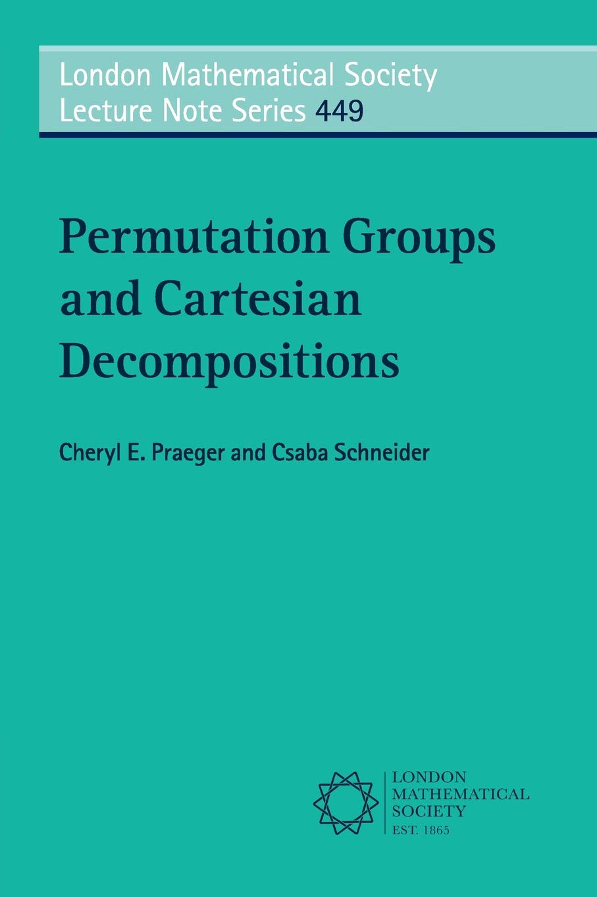
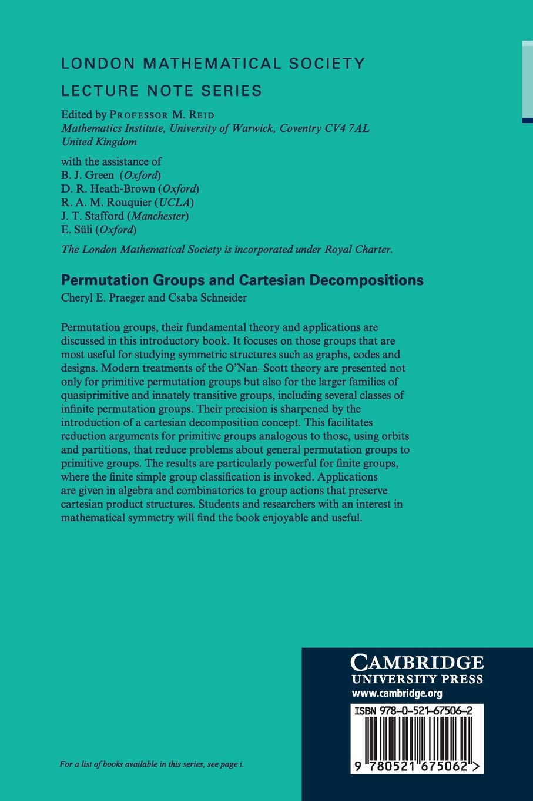

Permutation Groups and Cartesian Decompositions
|  |  |
|---|
Cheryl E. Praeger and Csaba Schneider. Permutation Groups and Cartesian Decompositions. London Mathematical Society Lecture Notes Series, volume 449. Cambridge University Press, 2018.
In addition to presenting a coherent theory of permutation groups preserving cartesian decompositions, the book contains some standard material in the theory of permutation groups. In particular we cover in detail the following topics:
- the general theory of group actions;
- primitive, imprimitive groups, block systems;
- orbitals, orbital graphs;
- transitive minimal normal subgroups;
- permutation groups with a regular normal subgroup and the holomorph as a permutation group;
- Burnside's Theorem on the socle of a 2-transitive group;
- Scott's Lemma on the subdirect subgroups of direct products of simple groups;
- wreath products and their primitive and imprimitive actions;
- twisted wreath products and their actions;
- the O'Nan-Scott Theorem for primitive and quasiprimitive permutation groups;
- the maximal subgroups of finite alternating and symmetric groups;
- factorisations of simple groups;
- the automorphism groups of Hamming graphs and their generalisations over possibly infinite alphabets.
You may access parts of the book through CUP, GoogleBooks, or Amazon.
One of the most important achievements of this book is building the first formal theory on G-invariant cartesian decompositions; this brings to the fore a better knowledge of the O'Nan-Scott theorem for primitive, quasiprimitive, and innately transitive groups, together with the embeddings among these groups. This is a valuable, useful, and beautiful book. (Pablo Spiga on MathSciNet)
This is a thorough reference book that consists of three parts. The first part introduces permutation groups. A non-expert reader with graduate student’s knowledge of permutation groups will probably find the second half of even this introductory part new. The second, main part is about innately transitive groups and their cartesian decompositions. [...] The book ends with a short third part consisting of applications, to other parts of the theory of permutation groups, and to graph theory. In summary, the book is an impressive collection of theorems and their proofs [...] and it seems that most readers will use the book as reference material. (Miklós Bóna for the MAA)
(c) 2012-2019 All rights reserved. Csaba Schneider.